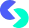
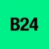

МолекулаАгрегаторы нейросетей
Молекула объединяет модели для текстов, изображений, видео и музыки. В одном аккаунте можно подобрать инструмент под этап работы, сохранить инструкции проекта и использовать готовые роли.
К задаче в МолекулеСуммаризация: Задайте цель сокращения. Сверьте выводы, оговорки и важные числа с оригиналом.
Укажите, для какого решения нужна краткая версия документа. Молекула поможет выделить основные положения; сохраните исключения и условия, которые могут изменить понимание текста.
Сделай краткую выжимку положения о возврате товара для сотрудника поддержки. Сохрани исключения, сроки и условия. Для каждого пункта укажи раздел источника и оставшиеся вопросы.

Молекула объединяет модели для текстов, изображений, видео и музыки. В одном аккаунте можно подобрать инструмент под этап работы, сохранить инструкции проекта и использовать готовые роли.
К задаче в МолекулеArxiv Summary Generator создаёт сокращённые обзоры научных публикаций из Arxiv. Сервис работает через сайт и использует ИИ для изложения материала. Среди описанных направлений есть машинное обучение, компьютерное зрение и языковая обработка; инструмент предназначен для краткого представления содержания статьи по выбранной исследовательской теме.

Avoma рассчитан на задачи, где нужно сокращать материал до основных положений. Ещё одно направление работы: обрабатывать голосовые обращения.

Deciphr AI используют для задачи: собирать видеосцену по описанию или визуальному исходнику. Ещё одно направление работы: сокращать материал до основных положений.
В инструменте «Diligen» можно разбирать текст договора и связанные документы. Ещё одно направление работы: сокращать материал до основных положений.

Fireflies.ai помогает превращать разговоры на встречах в доступный для дальнейшей работы материал. Для полезной заметки важно отличить принятое решение от обсуждения вариантов.
В инструменте «Loom AI» можно собирать видеосцену по описанию или визуальному исходнику. Ещё одно направление работы: сокращать материал до основных положений.
Magictool AI объединяет несколько ИИ-инструментов для работы с информацией. Среди направлений описаны чат, краткое изложение веб-страниц, вопросы по PDF и объяснение текста. Проверка грамматики дополняет набор, связывая чтение и разбор материалов с последующей работой над собственными формулировками в одном продукте.
Сравнивать «PowerPost» с другими инструментами раздела «Суммаризация» удобнее на одинаковом исходном материале.

Qwen Chat позволяет обсуждать задачи и готовить тексты с моделями Qwen. Веб-чат, отдельное API и локальный запуск имеют разные условия и возможности доступа.

Skywork используют, чтобы собирать слайды из материала по теме. Ещё одно направление работы: сокращать материал до основных положений.

SlideSpeak помогает работать с презентациями и документами через ИИ-инструменты. Для проверки результата полезно сравнить новый материал с исходными тезисами.

Speechify озвучивает письменный текст с помощью синтетических голосов. В приложении можно выбирать варианты звучания и язык, чтобы подстроить чтение под свои предпочтения. Продукт доступен на разных платформах и объединяет преобразование текста в речь с настройкой выбранного голоса.
«summarygenerator AI» представлен в разделе «Тексты и контент». При выборе проверьте нужную операцию и условия работы с результатом.
tl;dv работает с видеовстречами в Google Meet и Zoom, записывая разговоры и создавая расшифровки. Предусмотрены перевод и краткие заметки по обсуждению. Инструмент предназначен для переноса содержимого звонка в текстовый материал, который можно использовать вместе с записью для дальнейшего разбора договорённостей.
VERSE AI помогает взаимодействовать с PDF через чат. Набор возможностей охватывает генерируемые ответы и визуальная поддержка при работе с документом. Продукт связывает разговорный запрос с содержимым PDF и его наглядным представлением, позволяя рассматривать материал через текстовый диалог в пользовательском интерфейсе.
Для «Web3 Summary» сначала определите свою задачу и требуемый результат. Карточка относится к направлению «Суммаризация».
Aili объединяет помощь с документами, краткие пересказы веб-страниц и работу в чате на разных устройствах. Сервис описан как персональный помощник для таких задач. Для сравнения возьмите один материал и проверьте точность пересказа, доступность нужного контекста и то, удобно ли продолжить обсуждение после смены устройства.
«Alfred (alfredsearch.com)» готовит текстовый черновик по условиям задачи. Дополнительно «Alfred (alfredsearch.com)» помогает составить сказочный сюжет.
«Booknotes» помогает подготовить книжный материал.

Brand24 относится к инструментам, которые помогают сокращать материал до основных положений. Ещё одно направление работы: исследовать тему и разбирать найденную информацию.
Firefox Smart Window используют, чтобы выполнять задачи с веб-страницами. Ещё одно направление работы: сокращать материал до основных положений.
GPT-Zip.Link сокращает веб-материал перед его использованием в запросах к языковой модели. Инструмент интегрируется с API OpenAI и предназначен для обработки входного содержимого веб-приложений. Такая подготовка связывает сжатие текста с последующей работой ИИ-функций в выбранном программном продукте.

Highlight AI используют, чтобы сокращать материал до основных положений. Ещё одно направление работы: готовить ответы на обращения клиентов.
ittybrief формирует ежедневные информационные подборки с учётом интересов пользователя. Сервис ориентирован на получение тематического бюллетеня вместо самостоятельного просмотра большого потока материалов. Для одной темы проверьте происхождение и даты публикаций, затем оцените полноту подборки; персональный отбор может пропустить важную новость или показать несколько пересказов одного события.
«Kome» представлен в разделе «Суммаризация». При выборе проверьте нужную операцию и условия работы с результатом.
«Minimemo» работает с материалами для социальных площадок.

SciSpace объединяет поиск научных публикаций и диалог по PDF. Помогает разбирать сложные фрагменты, сравнивать найденные работы и связывать ответы с разделами исходного документа.

Scite показывает контекст научного цитирования и различает поддерживающие, противопоставляющие и упоминающие ссылки. Помогает проверять основания тезиса и готовить ответы по исследовательским источникам.
«Scriber» создаёт видеоматериал по заданию. «Scriber» также помогает подготовить персонализированный видеоматериал.
«Shortify» представлен в разделе «Суммаризация». При выборе проверьте нужную операцию и условия работы с результатом.
«SMRY» помогает подготовить резюме.
«Summarist» представлен в разделе «Суммаризация». При выборе проверьте нужную операцию и условия работы с результатом.
Сравнивать «SumyAI» с другими инструментами раздела «Видео» удобнее на одинаковом исходном материале.

Wordvice AI предоставляет средства корректуры и переформулирования текста, а также его краткого изложения и перевода. Редактор работает с академическими материалами в ходе написания. Пользователь может рассматривать языковые изменения вместе с содержанием своего документа, выбирая нужную операцию обработки письменного материала.
«CatchThat» собирает сведения о спортивных событиях.
«DocuSpeed» представлен в разделе «Суммаризация». При выборе проверьте нужную операцию и условия работы с результатом.
Flowith предлагает пространство для исследования и подготовки материалов с ИИ. Для сложной задачи полезно заранее обозначить, как связаны отдельные этапы работы.

Freed используют для задачи: сокращать материал до основных положений. Ещё одно направление работы: обрабатывать голосовые обращения.
Notta рассчитан на задачи, где нужно переводить записанную речь в текст. Ещё одно направление работы: сокращать материал до основных положений.
Perplexity ищет сведения и собирает ответ с ссылками на найденные материалы. Сервис подходит для первичного исследования вопроса, сравнения условий и подготовки списка источников для проверки.
«Podwise AI» преобразует речевую запись в письменный материал.
«Recall» помогает организовать работу с базой знаний.
«Recall AI (getrecall.ai)» помогает упорядочить рабочие заметки. «Recall AI (getrecall.ai)» также помогает упорядочить задачи проекта.
StockGPT предназначен для поиска сведений в отчётности Tesla через вопросы к ИИ. Запрос можно привязать к отчётному периоду, чтобы разбирать финансовые материалы компании. Ответы требуют сверки с документами: инструмент не предназначен для прогнозирования будущих результатов или принятия инвестиционных решений вместо пользователя.
Сравнивать «Summari» с другими инструментами раздела «Суммаризация» удобнее на одинаковом исходном материале.
Для «SummarQ» сначала определите свою задачу и требуемый результат. Карточка относится к направлению «Видео».
«Superpowered» преобразует речевую запись в письменный материал. Дополнительно «Superpowered» помогает упорядочить рабочие заметки.
Страница 1 из 5